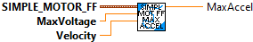
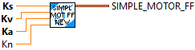

Calculates the feedforward from the gains and setpoints.
Parameters:
- SimpleMotorFF -- Data structure containing constants
- velocity Setpiont -- The velocity setpoint.
- acceleration -- The setpoint acceleration. (Note that this could also be calculated
from desired velocity, previous desired velocity (or actual velocity), and cycle time.)
Returns:
- FeedForward - The computed feedforward.

Calculates the feedforward from the gains and setpoints. (acceleration is assumed to be zero)
Parameters:
- SimpleMotorFF - Data structure containing constants
- velocity - The velocity setpoint.
Returns:
- FeedForward - The computed feedforward.

Calculates the feedforward from the gains and setpoints. Instead of Acceleration Setpoint being supplied as a setpoint, the acceleration is calculated based on the change in the Velocity setpoint.
Parameters:
- SimpleMotorFF -- Data structure containing constants
- velocity Setpoint -- The velocity setpoint.
- dt -- The delta time (Seconds), default is 0.02 seconds.
Returns:
- FeedForward - The computed feedforward.

Calculates the feedforward from the gains and setpoints. This VI calculates the acceleration by using a Linear System and a Linear Plant Inversion Feedforward. These systems are only created upon the first call or when one of the Kv or Ka values change.
Input parameters:
- SimpleMotorFF - Data structure containing constants
- Vel_SP -- The current velocity setpoint. (The velocity SP that was used last scan cycle)
- nextVel_SP -- The next velocity setpoint. (The velocity SP that we are using this scan cycle.)
- dt_Sec -- Time between velocity setpoints in seconds.
Returns:
- FeedForward - The computed feedforward.
- Error -- If TRUE, an error occured calculating the acceleration value.

Calculates the maximum achievable acceleration given a maximum voltage supply and a velocity. Useful for ensuring that velocity and acceleration constraints for a trapezoidal profile are simultaneously achievable - enter the velocity constraint, and this will give you a simultaneously-achievable acceleration constraint.
Parameters:
- Simple_Motor_FF - Data structure containing constants
- maxVoltage -The maximum voltage that can be supplied to the motor.
- velocity - The velocity of the motor.
Returns:
MaxAccel - The maximum possible acceleration at the given velocity.

Calculates the maximum achievable velocity given a maximum voltage supply and an acceleration. Useful for ensuring that velocity and acceleration constraints for a trapezoidal profile are simultaneously achievable - enter the acceleration constraint, and this will give you a simultaneously-achievable velocity constraint.
Parameters:
- Simple_Motor_FF - Data structure containing constants
- maxVoltage -The maximum voltage that can be supplied to the motor.
- Acceleration - The acceleration of the motor.
Returns:
MaxVelocity - The maximum possible velocity at the given acceleration.

Calculates the minimum achievable acceleration given a maximum voltage supply and a velocity. Useful for ensuring that velocity and acceleration constraints for a trapezoidal profile are simultaneously achievable - enter the velocity constraint, and this will give you a simultaneously-achievable acceleration constraint.
Parameters:
- Simple_Motor_FF - Data structure containing constants
- maxVoltage -The maximum voltage that can be supplied to the motor.
- velocity - The velocity of the motor.
Returns:
- MinAccel - The minimum possible acceleration at the given velocity.

Calculates the minimum achievable velocity given a maximum voltage supply and an acceleration. Useful for ensuring that velocity and acceleration constraints for a trapezoidal profile are simultaneously achievable - enter the acceleration constraint, and this will give you a simultaneously-achievable velocity constraint.
Parameters:
- Simple_Motor_FF - Data structure containing constants
- maxVoltage -The maximum voltage that can be supplied to the motor.
- Acceleration - The acceleration of the motor.
Returns:
- MinVelocity - The minimum possible velocity at the given acceleration.

Creates a new SimpleMotorFeedforward with the specified gains. Units of the gain values will dictate units of the computed feedforward. (Generally units should be in meters to match other internal routines.)
These can be obtained by using the FRC Characterization routine to test your robot.
Parameters
- ks -- The static gain. (volts)
- kv -- The velocity gain. (volts seconds/meter)
- ka -- The acceleration gain. (volts seconds^2 / meter )
- Kn -- The normalization constant. When using the advanced PID, this constant helps
match the output of this routine to input of the advanced PID.